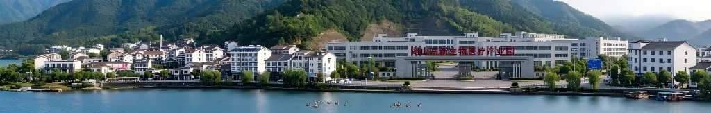

《湖山县区情概览：依山傍水的产业新城》

湖山县位于A城远郊，三面环山，一面临水，水系发达，水深流急的“雁落湖”是本地著名的自然景观。
近年来，湖山县积极探索产业转型，不仅成功打造了省级高新生物医疗工业园，更凭借得天独厚的区位条件， 大力规范并发展了现代殡葬服务业。目前，全县拥有全市规模最大、设施最先进的综合性殡仪馆及配套的生态陵园，并涌现出呈豫陵园、元福殡葬服务中心等一批知名殡葬服务品牌。
湖山县正致力于打造集“高端医疗器械制造、现代遗体处理、生命文化宣教”于一体的全产业链闭环， 让生者得到慰藉，让逝者归于安宁，成为周边地区重要的生命服务枢纽。